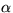
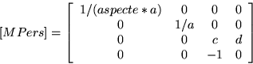
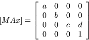

Aquestes matrius s'apliquen a tots els vèrtexs del model transformat, i els passa del sistema de coordenades de l'observador a coordenades normalitzades.
En el cas que el tipus de càmera sigui perspectiva, la matriu es calcula a partir dels plans de retallat anterior i posterior zProp, zLluny, i de l'angle d'obertura de la càmera :
a := tangent ( / 2)
c := (zProp + zLluny) / (zProp - zLluny)
d := 2 * zProp * zLluny / (zProp - zLluny)
|  |
En el cas que el tipus de càmera sigui axonomètrica, la matriu es calcula a partir dels plans de retallat anterior i posterior zProp, zLluny, i de la grandària de la finestra 2D (ample, alt; habitualment tindrem que ample/alt = aspecte):
a := 2 / ample b := 2 / alt c := 2 / (zProp - z Lluny) d := (zProp + zLluny) / (zProp - zLluny)
|  |
Exercici a: Proveu de multiplicar -manualment- la matriu MPers per diversos vectors en el sistema de coordenades de l'observador. Proveu primer amb punts que tinguin les coordenades x, y nules. Què passa si el punt tenia una coordenada z igual a zProp? Què passa si la z del punt era igual a zLluny? Què passa si la coordenada del punt era nula?
Exercici b:
Proveu ara de multiplicar -manualment- la matriu MPers per
diversos vectors corresponents a punts amb x=1, y=0. Què passa si el punt
tenia una coordenada z igual a zProp? Què passa si la z del punt era
igual a zLluny? Què passa si la coordenada del punt era nula? Què
passa si la z del punt era (zProp + zLluny)/2? Què passa si la z del
punt era 10*zLluny? Que passa si era 0.1*zProp?